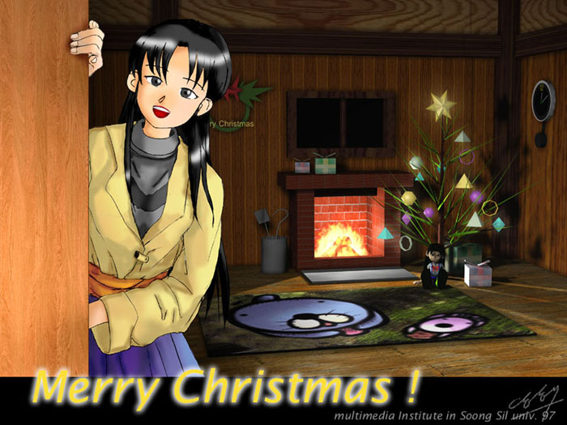

|
안녕하세요. 크리스마스를 앞두고 저를 네트워크상에서 아는 모든이들에게 이 카드를 띄웁니다. 1998년 한해는 어떻게 보내셨는지요. 제가 어릴때 이맘때쯤이면, 우리집 한구석에는 트리가 반짝이고 있었습니다. 제 키보다 훨씬 커다랬던(물론 과거에) 그 트리 속에 불이 깜빡이는 것을 보고 있으면, 마치 마법의 숲을 보는 기분이들곤 했습니다. 지금 이 카드를 받으신 당신도 한번 보신적이 있으신가요 ? 그런, 트리를 이 그림에 싣고 싶었는데 시스템이 반항하더군요. 결국은 저렇게 앙상한 트리와 말뿐이게 되었습니다. 그러지 말고, 가족들과 한번 트리를 만들어 보심이 어떤가요 ? 늦었다고 생각하지 마십쇼. 예전에 저는 일년내내 트리를 밝혀 놓은 집을 보았습니다. 게을러서 안치웠다고 생각할수도 있겠지만, 저는 누군가 아주 트리를 좋아하는 사람의 집일거라고 생각했습니다. 저는 트리의 풍성함이 좋습니다. 장식일지는 몰라도, 그 선물들을 바라보고 있자면, 따뜻한 마음이 느껴집니다. 가족들과 때로는 친구들과 작은 선물 주고 받으며, 트리 옆에 앉아 즐거운 선물 받는 그런 따뜻한 크리스마스가 되시길 빕니다. 혼자계셔야 하는 어쩔수 없는 상황에 계신 분들에게도 그 누군가의 마음이 함께 하길 바랍니다. 가장 따뜻할수도 있지만, 가장 외로울수도 있는 그런 크리스마스에 당신은 그 누구보다도 따뜻한 크리스마스를 보내길 바라고 제가 기도 드리겠습니다. |
|
The Story in Forest 숲속얘기 병서기가 ~! |